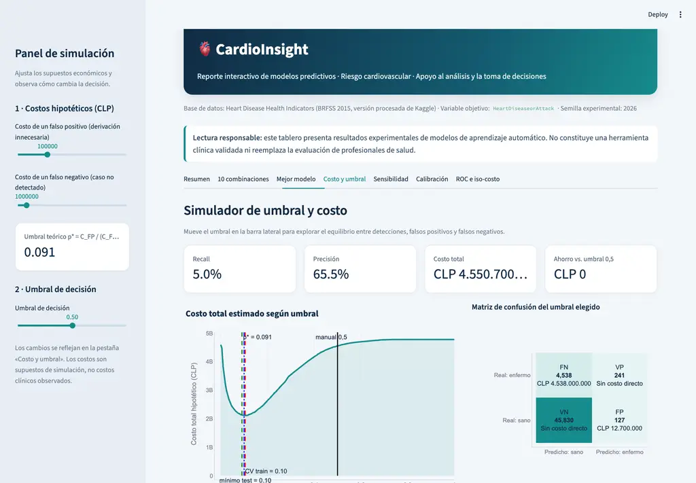

Ensambles, desbalance y umbral óptimo sobre 253.680 respuestas del BRFSS 2015.
GRUPO 14 · JOAQUÍN RIVAS · MATÍAS ORTEGA
CARDIOINSIGHT01 · DECISIÓN
Problema de negocio
Un error no cuesta lo mismo que el otro
La métrica técnica importa; la decisión necesita una matriz de costos explícita.
Falso positivo
CLP 100.000
Derivar a una persona sin enfermedad: consulta cardiológica, ECG y ecocardiograma innecesarios.
Falso negativo
CLP 1.000.000
No detectar un caso: retraso de evaluación y posibles complicaciones de mayor costo.
10×
Minimizar FP × CFP + FN × CFN
CARDIOINSIGHT01 · CONTEXTO
BRFSS 2015 · salud cardiovascular
Detectar casos para priorizar derivaciones
Encuesta de salud: buscamos señales de enfermedad cardíaca o infarto, no un diagnóstico clínico. Derivar de más consume recursos; omitir un caso puede retrasar su evaluación.
Respuestas
253.680
Predictoras
21
Train
202.944
80% estratificado
Test
50.736
20% · evaluación
9,42%CLASE POSITIVA
CARDIOINSIGHT03 · FLUJO
Diseño experimental
Flujo del código, paso a paso
Del CSV a la decisión: comparamos por validación cruzada; el test reporta resultados, pero no elige al ganador.
01 · PARTIR
Train y test
Dividimos 80/20 de forma estratificada: ambos conjuntos conservan la proporción de casos. Semilla 2026.
02 · PREPARAR
Limpieza en pipeline
Recortamos BMI a 15–60 y escalamos solo BMI, salud mental y salud física dentro de ColumnTransformer.
03 · COMPARAR
SMOTENC o pesos
A: generamos casos positivos solo en el train de cada fold. B: ponderamos la clase positiva sin generar filas.
04 · AJUSTAR
Búsqueda con CV
RandomizedSearchCV: 30.000 filas estratificadas, 10 configuraciones, 3 folds y F1 de la clase positiva.
05 · ELEGIR
Mejor por F1-CV
Reentrenamos con todo el train la mejor configuración de cada combinación. Elegimos por CV; el test solo confirma.
06 · DECIDIR
Costo y umbral
Reentrenamos el ganador sin balanceo, afinamos el umbral solo con train y medimos el costo final en test.
5 modelos × 2 estrategias = 10 combinaciones
ÁrbolRandom ForestAdaBoostXGBoostLightGBM
CARDIOINSIGHT04 · MODELOS
Comparación
Comparación de modelos y estrategias
El test confirma el resultado; nunca participa en la elección.
AdaBoost · Pesos0,345
Árbol · Pesos0,346
Árbol · SMOTENC0,347
LightGBM · SMOTENC0,368
Random Forest · SMOTENC0,374
XGBoost · Pesos0,377
LightGBM · Pesos0,381
XGBoost · SMOTENC0,381
AdaBoost · SMOTENC0,384
Random Forest · Pesos0,384
GANADOR · Random Forest + pesosF1-CV 0,384 ± 0,006
CARDIOINSIGHT05 · GANADOR
Modelo ganador · F1 de validación cruzada
Random Forest lideró; AdaBoost quedó muy cerca
F1 en CV · criterio de elección
0,384
± 0,006 entre los 3 folds
F1 en test · confirmación
0,369
No se usó para elegir
Brecha train − test
0,014
Train 0,384 → test 0,369
Importancia de variables del Random Forest ganador
Edad21,7%
Salud general20,0%
Presión alta14,4%
Colesterol alto9,7%
Dificultad al caminar7,2%
ACV previo5,1%
Mismos datos de resultados/importancias.csv usados en la pestaña «Mejor modelo» de Streamlit.
CARDIOINSIGHT06 · COSTOS
Matriz defendible
Evidencia para FP; supuesto explícito para FN
La transparencia es más sólida que una falsa precisión clínica.
Falso positivo · referencia arancelaria
CLP 100.000
Consulta cardiología$18.890
ECG reposo$7.490
Eco Doppler color$74.710
Fuente: Arancel MLE FONASA 2025 · total $101.090, redondeado.
Falso negativo · decisión gerencial
CLP 1.000.000
Supuesto conservador de 10×. No existe una tarifa única para un caso no detectado.
Referencia de magnitud: CLP 423.300 por día UCI cardiovascular, seis días promedio, en pesos de 2011.
Alvear et al. · Revista Médica de Chile · 2013
CARDIOINSIGHT07 · UMBRAL Y COSTO
Decisión sensible al costo
Costo total según el umbral
Umbral: probabilidad mínima para derivar a una persona. La curva suma el costo de las derivaciones innecesarias y los casos omitidos.
Falso positivo (FP)Derivar a una persona sin enfermedad.Falso negativo (FN)No derivar a una persona con enfermedad.0,10 por validación cruzadaSe eligió usando train; el mínimo de test es retrospectivo.
CARDIOINSIGHT08 · ROC Y MATRIZ
Resultado al umbral elegido
Curva ROC y matriz de confusión
Los costos y el umbral manual vienen de la lámina anterior.
ROC completa · todo el test
Zoom · umbrales cercanos a 0,10
ModeloIso-costoUmbral 0,5TeóricoCV 0,10Manual
Matriz de confusión · test
Predice NOPredice SÍ
Real NO
Correctos · CLP 0
Real SÍ
Detectados · CLP 0
CARDIOINSIGHT08 · SENSIBILIDAD
Robustez
La recomendación sobrevive a cinco escenarios
Cuando el falso negativo se encarece, el umbral baja y aumenta el recall.
FN / FP = 2×t = 0,31
FN / FP = 5×t = 0,16
FN / FP = 10×t = 0,10
FN / FP = 20×t = 0,06
FN / FP = 50×t = 0,03
CARDIOINSIGHT10 · DASHBOARD
Demo
La gerencia puede mover costos y observar la decisión
Controles, curva de costo, matriz, ahorro, sensibilidad y ROC/iso-costo.

1Mover costo FN
2Comparar umbrales
3Leer matriz y ahorro
4Revisar ROC/iso-costo
CARDIOINSIGHT11 · CIERRE
Recomendación para gerencia
Derivar desde una probabilidad de 0,10
Random Forest reentrenado sin balanceo · umbral elegido con train.
Decisión
0,10
Probabilidad mínima para recomendar evaluación cardiológica.
Impacto estimado en test
83,0%
de los casos positivos detectados.
CLP 2.433 millones menos que usando 0,5.
Antes de uso clínico
Validar con otra población.
Revisar sesgos entre grupos.
Confirmar los costos supuestos.
Encuesta autoinformada; no es diagnóstico.
Uso de IA: apoyo en revisión de código, documentación y diseño. El grupo verificó y explica los resultados.